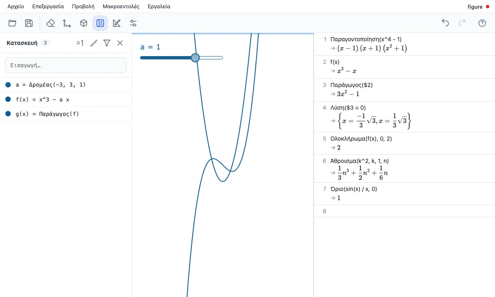

Συμβολικός υπολογισμός
Το DocGeo υπολογίζει ακριβείς τιμές με το Giac, τη μηχανή συμβολικού υπολογισμού του Xcas: παραγώγους, παράγουσες, παραγοντοποιήσεις, εξισώσεις, όρια, αθροίσματα, στους τύπους του σχήματος όπως και σε μια προβολή CAS. Βρίσκει επίσης την εξίσωση ενός γεωμετρικού τόπου και αποδεικνύει γεωμετρικές ιδιότητες.

Το Giac φορτώνεται την πρώτη φορά που το χρειάζεται ένας υπολογισμός, ποτέ για σχήμα που δεν το χρειάζεται. Οι τελευταίες απαντήσεις αποθηκεύονται στο σχήμα: ανοίγει και εμφανίζεται χωρίς να περιμένει το Giac, ακόμη και εκτός σύνδεσης. Αν το Giac δεν μπορεί να φορτωθεί, εμφανίζεται «⚠ Giac» κάτω αριστερά: οι ήδη γνωστές απαντήσεις μένουν, οι άλλες είναι απροσδιόριστες.
Οι εντολές συμβολικού υπολογισμού
Χρησιμοποιούνται σε κάθε τύπο, όπως μια συνάρτηση. Μια έκφραση της οποίας ο τύπος είναι μόνο μία από αυτές τις εντολές δείχνει την απάντηση του Giac αντί για τον τύπο της.
| Εντολή | Αποτέλεσμα |
|---|---|
Παράγωγος(f),
Παράγωγος(e, v),
Παράγωγος(e, v, n)
|
παράγωγος, n-οστή παράγωγος ως προς v |
Ολοκλήρωμα(e),
Ολοκλήρωμα(e, v)
|
παράγουσα |
Ολοκλήρωμα(x^2, 0, a),
Ολοκλήρωμα(e, v, a, b)
|
ολοκλήρωμα από a έως b, ακριβής τιμή |
Παραγοντοποίηση(e) |
παραγοντοποίηση στους ρητούς: το
x^2 - 2 μένει ως έχει
|
ΑρρητηΠαραγοντοποίηση(e) |
παραγοντοποίηση με ριζικά: (x − √2)(x + √2) |
Ανάπτυξη(e),
Απλοποίηση(e)
|
ανεπτυγμένη μορφή, απλοποιημένη μορφή |
Λύση(x^2 = 2),
Λύση(e, v)
|
ταξινομημένη λίστα των πραγματικών λύσεων μιας εξίσωσης, ή μιας μηδενικής έκφρασης |
ΛύσηΜιγαδική(e) |
μιγαδικές λύσεις |
Άθροισμα(e, k, a, b) |
άθροισμα των e για ακέραιο k από a έως b |
Όριο(e, a),
Όριο(e, v, a)
|
όριο στο a, που μπορεί να είναι ∞
|
ΠολυώνυμοTaylor(e, a, n),
ΠολυώνυμοTaylor(e, v, a, n)
|
πολυώνυμο Taylor τάξης n στο a |
Η μεταβλητή v είναι x, y, z ή t, εξ ορισμού η πρώτη που διαβάζει
η έκφραση. Μια συνάρτηση του σχήματος γράφεται με το όνομά της:
g(x) = Παράγωγος(f).
-
Ένας δρομέας μένει σύμβολο για το Giac: το
Παραγοντοποίηση(x^2 - a)δείχνει x² − a ακόμη κι όταν a = 4. Η μετακίνηση του δρομέα δεν ζητά λοιπόν τίποτα από το Giac: η απάντηση απλώς επαναϋπολογίζεται, κατά την κίνηση. -
Εξαιρέσεις: η τάξη n ενός πολυωνύμου Taylor και τα όρια ενός
αθροίσματος χωρίς απλή μορφή (
Άθροισμα(1/k, k, 1, n)) διαβάζονται από την τιμή τους: ένας δρομέας δίνει μία απάντηση ανά ακέραια τιμή. -
Το
Ολοκλήρωμα(f, a, b), όπου f το όνομα μιας συνάρτησης, μένει η εντολή που σχεδιάζει το εμβαδόν· τοΟλοκλήρωμα(x^2, 0, 1)ή τοΟλοκλήρωμα(e, v, a, b)υπολογίζει την ακριβή τιμή. - Μέχρι να φτάσει η απάντηση, το αντικείμενο κρατά την τελευταία του τιμή. Μια απάντηση που το DocGeo δεν μπορεί να διαβάσει κάνει το αντικείμενο απροσδιόριστο. Μια παράγωγο την υπολογίζει το DocGeo όσο περιμένει το Giac.
Η προβολή CAS
Όπως του GeoGebra: αριθμημένες γραμμές υπολογισμού, δίπλα στο σχήμα ή στη δική τους καρτέλα.
| Ενέργεια | Πώς |
|---|---|
| Προσθήκη της προβολής | Αρχείο › Προβολή › Νέα προβολή CAS (μία ανά σχήμα), ή Αρχείο › Νέα καρτέλα CAS («CAS1», «CAS2»…) |
| Υπολογισμός γραμμής | πληκτρολόγηση στην τελευταία, κενή γραμμή, μετά Enter: εμφανίζεται η απάντηση και περιμένει νέα γραμμή |
| Ανάκληση γραμμής | στην τελευταία γραμμή, το ↑ ανακαλεί τις προηγούμενες γραμμές, πρώτα την πιο πρόσφατη, και το ↓ επιστρέφει στο κείμενο που πληκτρολογείται, όπως σε ένα τερματικό |
| Συμπλήρωση ονόματος | από το δεύτερο γράμμα, μια λίστα προτείνει τις εντολές, τις συναρτήσεις, τα αντικείμενα του σχήματος και τα ονόματα που ορίζονται στην προβολή: ↑ και ↓ για επιλογή, Tab ή Enter για εισαγωγή, Esc για κλείσιμο |
| Αλλαγή γραμμής | κλικ πάνω της, μετά Enter· το Esc επαναφέρει το προηγούμενο κείμενο, τα ↑ και ↓ περνούν από γραμμή σε γραμμή |
| Διαγραφή γραμμής | άδειασμά της, μετά Enter: οι επόμενοι αριθμοί μετατοπίζονται |
| Διαγραφή της προβολής | Αρχείο › Προβολή › Διαγραφή της προβολής CAS |
Κάθε αλλαγή αναιρείται με Αναίρεση. Μια ακατανόητη γραμμή απορρίπτεται, με κόκκινο.
Γράψιμο μιας γραμμής
-
Μια γραμμή είναι ένας τύπος, με ή χωρίς εντολή: το
sqrt(12) - sqrt(3)δίνει √3, τοΠαραγοντοποίηση(x^4 - 1)την παραγοντοποίησή του. -
Το
$2είναι η απάντηση της γραμμής 2. Όταν διαγράφεται μια γραμμή, τα$nεπαναριθμούνται, και μια αναφορά στη διαγραμμένη γραμμή αντικαθίσταται από τον τύπο της. -
Τα
b := 3καιh(x) := x^2 + 1ορίζουν έναν αριθμό ή μια συνάρτηση για τις επόμενες γραμμές. -
Τα αντικείμενα του σχήματος διαβάζονται με την τρέχουσα τιμή
τους: με a = 2, το
a^2δίνει 4. Όταν μετακινούνται, οι γραμμές που τα διαβάζουν επαναϋπολογίζονται. Ένα γράμμα που δεν είναι αντικείμενο είναι ελεύθερη μεταβλητή: τοb^2μένει b². -
Τα
piκαιlnγράφονται όπως στο GeoGebra, το∞και ωςinf. Οι γωνίες είναι πάντα σε ακτίνια, ακόμη και σε σχήμα σε μοίρες. -
Τα
Αριθμητικός(e),Αριθμητικός(e, n)δίνουν προσεγγιστική τιμή (με n ψηφία)· τοΔιατήρησηΕισαγομένων(e)δείχνει το e όπως είναι, χωρίς υπολογισμό. Μια γραμμή σε εισαγωγικά,"Ακριβής υπολογισμός", είναι απλό κείμενο. -
Το
?αντικαθιστά μια απάντηση που το Giac δεν δίνει ή που το DocGeo δεν μπορεί να διαβάσει.
Υπόδειξη με το ποντίκι
Ενώ πληκτρολογείτε μια ήδη αρχισμένη γραμμή, ένα κλικ σε
αντικείμενο του σχήματος γράφει το όνομά του· ένα κλικ σε άλλη
γραμμή γράφει το $n της. Σε κενή γραμμή, το σχήμα
αντιδρά όπως συνήθως.
Ορισμός αντικειμένου του σχήματος
Ένας ορισμός που διαβάζει μόνο αντικείμενα του σχήματος
δημιουργεί και το αντικείμενο, με τη γραμμή του στην Κατασκευή:
το m(x) := x^2 + a σχεδιάζει τη συνάρτηση m. Ένας
ορισμός που διαβάζει ελεύθερη μεταβλητή, ένα $n ή
ένα όνομα ορισμένο μόνο στην προβολή (n := b^2)
μένει μόνο στην προβολή.
Στον αναγνώστη, οι γραμμές εμφανίζονται στη γλώσσα του προγράμματος περιήγησης.
Αλγεβρικές καμπύλες
Μια εξίσωση οποιουδήποτε βαθμού, ή μη πολυωνυμική,
πληκτρολογημένη στην Κατασκευή, είναι καμπύλη:
f = x^3 + y^3 = 3x y (το φύλλο του Descartes),
c = sin(x) = y. Σχεδιάζεται εκεί όπου διασχίζει το
παράθυρο και το ακολουθεί όταν μετακινείται· μπορούμε να βάλουμε
σημεία πάνω της και να την τέμνουμε με άλλα αντικείμενα.
| Εντολή | Αποτέλεσμα |
|---|---|
ΕξίσωσηΓεωμετρικούΤόπου(M, P) |
ολόκληρη η καμπύλη που διαγράφει το σημείο M όταν το σημείο σε αντικείμενο P διατρέχει το αντικείμενό του |
Περιβάλλουσα(d, P) |
ολόκληρη η καμπύλη που εφάπτεται στις θέσεις της ευθείας d όταν το P διατρέχει το αντικείμενό του |
Όπως στο GeoGebra, είναι ολόκληρη η εξίσωση, με όλους τους
κλάδους της, όχι μόνο το τμήμα που διατρέχεται: το
ΕξίσωσηΓεωμετρικούΤόπου ενός σημείου που διατρέχει
ένα τμήμα δίνει την ευθεία. Όσο περιμένουμε το Giac, ή για
κατασκευή που δεν μεταφράζει (μακροεντολές, διχοτόμοι,
εγγεγραμμένος κύκλος, δρομέας ως οδηγός, χώρος), είναι ο τόπος
που διατρέχεται του
ΓεωμετρικόςΤόπος.
Απόδειξη
Έξι κατηγορήματα, με ορίσματα ονόματα αντικειμένων, λένε αν μια
ιδιότητα ισχύει στο σχήμα όπως είναι: true ή
false.
| Κατηγόρημα | Αληθές αν |
|---|---|
ΕίναιΣυνευθειακά(A, B, C) |
τα τρία σημεία είναι συνευθειακά |
ΕίναιΠαράλληλες(d, e),
ΕίναιΚάθετες(d, e)
|
οι ευθείες, τα τμήματα ή οι ημιευθείες είναι παράλληλα, κάθετα |
ΕίναιΟμοκυκλικά(A, B, C, D) |
τα τέσσερα σημεία βρίσκονται στον ίδιο κύκλο (ή την ίδια ευθεία) |
ΕίναιΣυντρέχουσες(d, e, f) |
οι τρεις ευθείες διέρχονται από το ίδιο σημείο (ή είναι παράλληλες) |
ΕίναιΙσα(a, b) |
δύο σημεία, ευθείες ή κύκλοι συμπίπτουν· δύο τμήματα έχουν το ίδιο μήκος· δύο αριθμοί είναι ίσοι |
Το ΑποδεικνύεταιΓενικάΟτι(p), όπου p ένα από αυτά
τα κατηγορήματα, λέει αν είναι αληθές γενικά: για όλες
τις θέσεις των ελεύθερων σημείων και των σημείων σε αντικείμενα,
εκτός από εκφυλισμένες περιπτώσεις. Με G =
Βαρύκεντρο(A, B, C), το
ΕίναιΣυνευθειακά(A, B, G) γίνεται αληθές όταν
βάλουμε το C πάνω στην (AB), αλλά το
ΑποδεικνύεταιΓενικάΟτι(ΕίναιΣυνευθειακά(A, B, G))
μένει ψευδές. Το Giac μεταφράζει την κατασκευή σε εξισώσεις,
όπως το GeoGebra: η απάντηση φτάνει το πολύ σε λίγα δευτερόλεπτα
και αποθηκεύεται στο σχήμα.
-
Ο υπολογισμός καλύπτει όλες τις τομές μαζί: για να μιλήσουμε
για τη δεύτερη τομή μιας ευθείας και ενός κύκλου που
διέρχονται από σημείο A, την κατασκευάζουμε με
ΆλληΤομή(c, d, A). -
Το
ΑποδεικνύεταιΓενικάΟτιμένει απροσδιόριστο για κατασκευή που δεν μεταφράζει (εκείνες του ΕξίσωσηΓεωμετρικούΤόπου, ή γωνία, λόγος ή ακτίνα που δεν είναι απλό κλάσμα, όπως στροφή 60°), και στην προβολή CAS. -
Τα ορίσματα είναι ονόματα: κατασκευάστε και ονομάστε πρώτα
τις ευθείες,
ΑποδεικνύεταιΓενικάΟτι(ΕίναιΠαράλληλες(d, e)).
Σχήματα GeoGebra
Κατά την εισαγωγή μεταφέρονται οι εντολές συμβολικού υπολογισμού
των τύπων, οι γραμμές της προβολής CAS του GeoGebra, εκείνες της
Αριθμομηχανής Suite, τα LocusEquation,
Envelope, Prove και τα κατηγορήματα.
Ένα κελί με εντολή που δεν έχει το DocGeo επισημαίνεται.